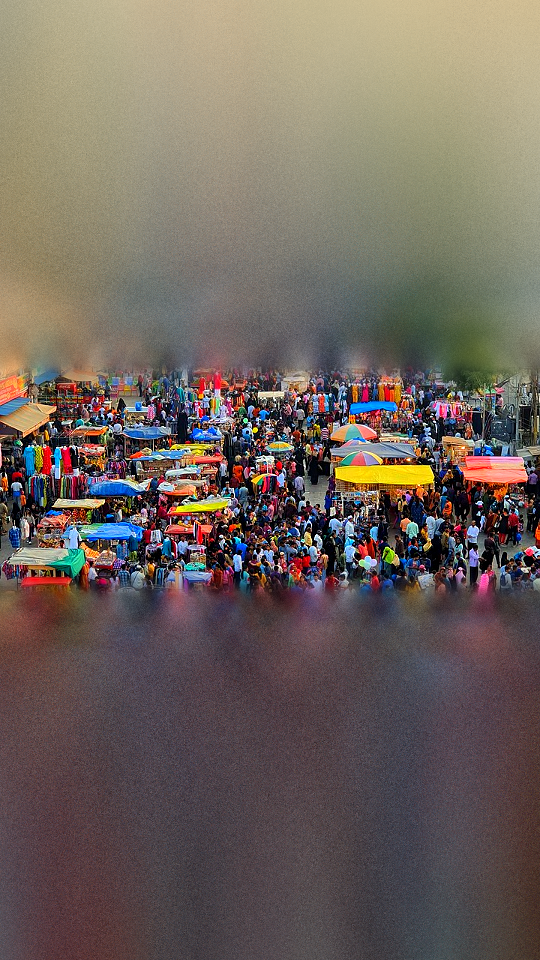
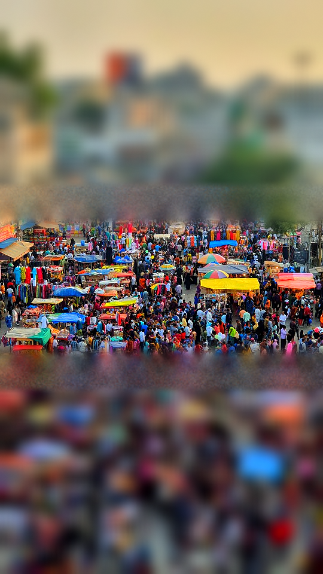
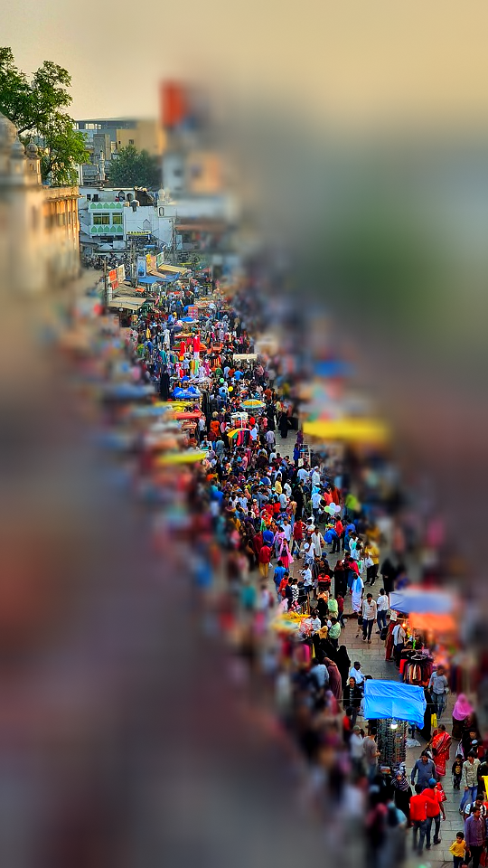
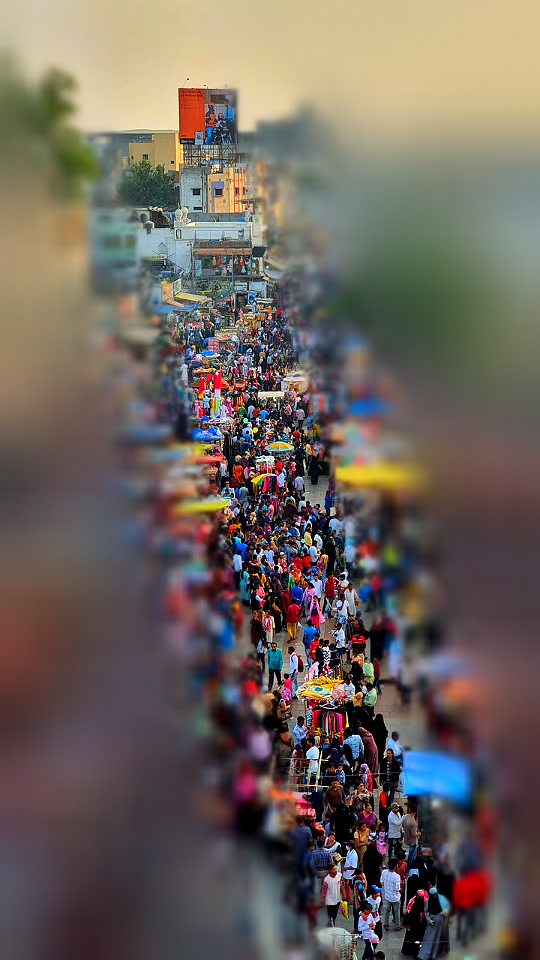
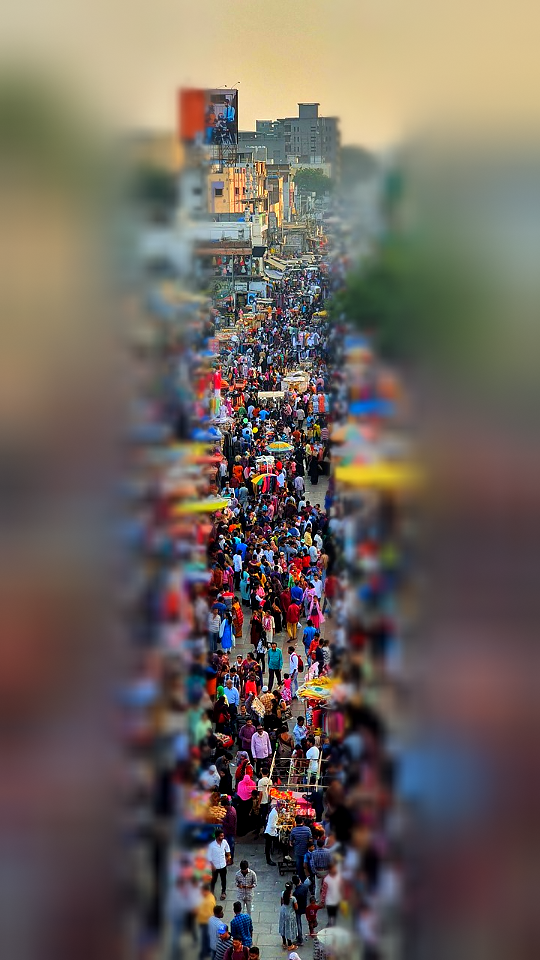
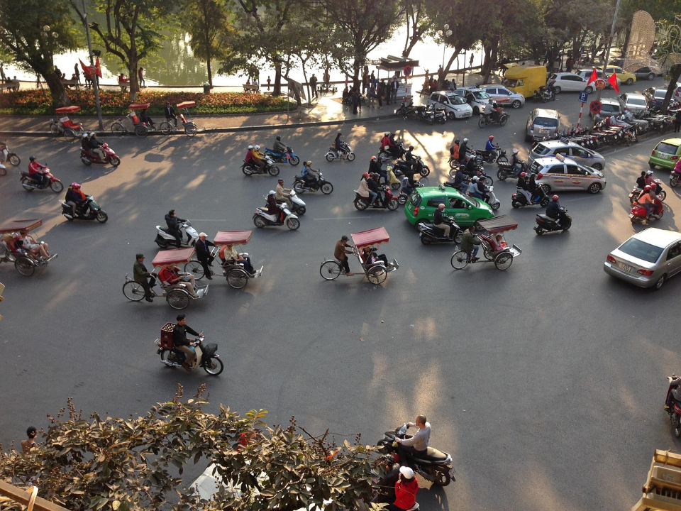
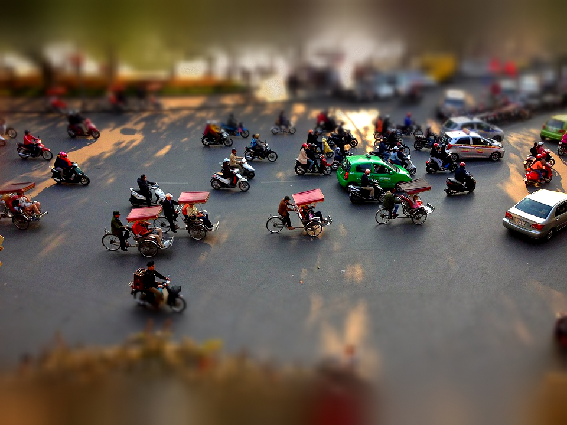
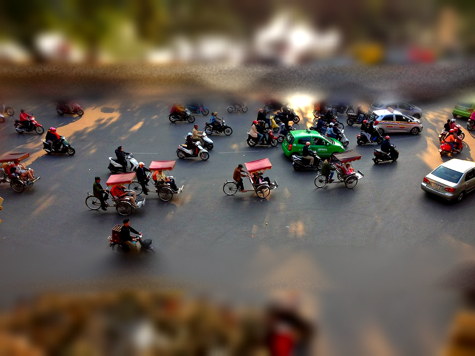

移轴微缩 · 静态对照（各图默认参数直出）
nyc
原图ABCA·用户口味
nyc · 光圈形状（B 圆 vs 六角）
B 圆
B 六角
beach
原图ABCA·用户口味
beach · 光圈形状（B 圆 vs 六角）
B 圆
B 六角
bazaar
原图AB
C
A·用户口味
bazaar · 光圈形状（B 圆 vs 六角）
B 圆
B 六角
bazaar · 竖幅倾角矩阵（A · 0/60/75/90°）
tilt 0°tilt 60°
tilt 75°
tilt 90°
hanoi
原图
A
BC
A·用户口味
hanoi · 光圈形状（B 圆 vs 六角）